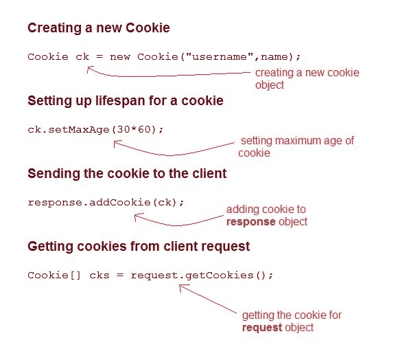
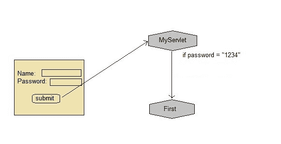

在 Servlet 中将 Cookies 用于会话管理
原文：https://www.studytonight.com/servlet/storing-session-using-cookies.php
cookie是作为响应从网络服务器发送到客户端的小信息。cookie是用于存储客户端状态的最简单的技术。
cookie存储在客户端计算机上。它们有一个生命周期，并在生命周期结束时被客户端浏览器销毁。
然而，使用 Cookies 存储客户端状态有一个缺点，如果客户端已经转而在浏览器中保存 COokie 设置，那么客户端状态将永远无法保存，因为浏览器不允许应用存储 cookies。
servlet:Cookies API
Cookie 是使用 Servlet API 中的 Cookie 类创建的。使用addCookie()方法将饼干添加到响应对象。此方法通过 HTTP 响应流发送 cookie 信息。getCookies()方法用于访问添加到响应对象的 cookies。

示例演示了 Cookies 的用法

以下提到的文件是示例所必需的:
index.html
<form method="post" action="validate">
Name:<input type="text" name="user" /><br/>
Password:<input type="text" name="pass" ><br/>
<input type="submit" value="submit">
</form>
web.xml
<web-app...>
<servlet>
<servlet-name>validate</servlet-name>
<servlet-class>MyServlet</servlet-class>
</servlet>
<servlet-mapping>
<servlet-name>validate</servlet-name>
<url-pattern>/validate</url-pattern>
</servlet-mapping>
<servlet>
<servlet-name>First</servlet-name>
<servlet-class>First</servlet-class>
</servlet>
<servlet-mapping>
<servlet-name>First</servlet-name>
<url-pattern>/First</url-pattern>
</servlet-mapping>
<welcome-file-list>
<welcome-file>index.html</welcome-file>
</welcome-file-list>
</web-app>
MyServlet.java
import java.io.*;
import javax.servlet.*;
import javax.servlet.http.*;
public class MyServlet extends HttpServlet {
protected void doPost(HttpServletRequest request, HttpServletResponse response)
throws ServletException, IOException {
response.setContentType("text/html;charset=UTF-8");
String name = request.getParameter("user");
String pass = request.getParameter("pass");
if(pass.equals("1234"))
{
Cookie ck = new Cookie("username", name);
response.addCookie(ck);
response.sendRedirect("First");
}
}
}
First.java
import java.io.*;
import javax.servlet.*;
import javax.servlet.http.*;
public class First extends HttpServlet {
protected void doGet(HttpServletRequest request, HttpServletResponse response)
throws ServletException, IOException {
response.setContentType("text/html;charset=UTF-8");
PrintWriter out = response.getWriter();
Cookie[] cks = request.getCookies();
out.println("Welcome "+ cks[0].getValue());
}
}
饼干的种类
饼干有两种。它们如下:
- 会议
- 坚持的
1)会话 cookie:
会话 cookies 没有任何过期时间。它存在于浏览器内存中。当网络浏览器关闭时，cookies 会自动销毁。
2)持续饼干:
持久 cookies 有一个过期时间。它存储在用户的硬盘中，并根据到期时间销毁。
饼干是如何工作的？
当用户启动一个网站并向网站请求信息时。网站服务器回复并发送一个 cookie。这块饼干放在硬盘上。下次当你回到同一个网站时，你的电脑会把 cookies 发回来。现在，网站服务器识别数据，并将您的信息出售给其他卖家。
演示 5.html
<!DOCTYPE html>
<html>
<head>
<meta charset="ISO-8859-1">
<title>Insert title here</title>
</head>
<body>
<form action="abc" method="post">
Enter User name: <input type="text" name="val1"><br>
Enter Password: <input type="text" name="val2"><br>
<input type="submit" value="go">
</form>
</body>
</html>
cookie1.html
package com.app.studytonight;
import java.io.*;
import javax.servlet.*;
import javax.servlet.http.*;
public class cookie1 extends HttpServlet {
public void doPost(HttpServletRequest request, HttpServletResponse response){
try{
response.setContentType("text/html");
PrintWriter out = response.getWriter();
String n=request.getParameter("val1");
out.print("Welcome "+n);
Cookie ck=new Cookie("uname",n);
response.addCookie(ck);
out.print("<form action='pqr' method='post'>");
out.print("<input type='submit' value='go'>");
out.print("</form>");
out.close();
}
catch(Exception e)
{
System.out.println(e);
}
}
}
cookie2.html
package com.app.studytonight;
import java.io.*;
import javax.servlet.*;
import javax.servlet.http.*;
public class cookie2 extends HttpServlet {
public void doPost(HttpServletRequest request, HttpServletResponse response){
try{
response.setContentType("text/html");
PrintWriter out = response.getWriter();
Cookie ck[]=request.getCookies();
out.print("Hello "+ck[0].getValue());
out.close();
}
catch(Exception e)
{
System.out.println(e);
}
}
}
web.xml
<servlet>
<servlet-name>s1</servlet-name>
<servlet-class>com.app.studytonight.cookie1</servlet-class>
</servlet>
<servlet-mapping>
<servlet-name>s1</servlet-name>
<url-pattern>/abc</url-pattern>
</servlet-mapping>
<servlet>
<servlet-name>s2</servlet-name>
<servlet-class>com.app.studytonight.cookie1</servlet-class>
</servlet>
<servlet-mapping>
<servlet-name>s2</servlet-name>
<url-pattern>/pqr</url-pattern>
</servlet-mapping>
</web-app>